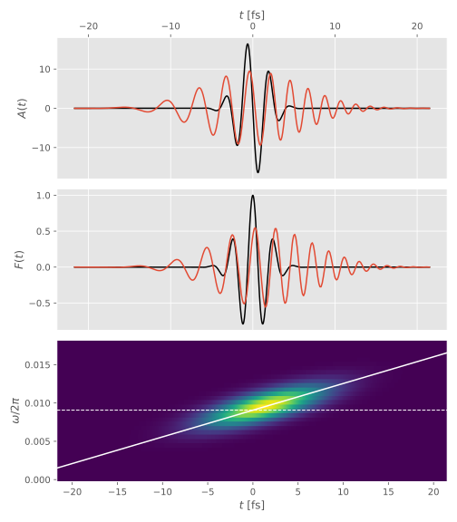
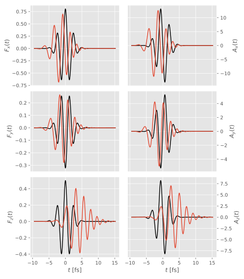

Dispersion
Dispersion is most easily calculated in the frequency domain, where it simply amounts to multiplication of the spectral amplitudes by a transfer function:
\[\hat{\vec{F}}_2(\omega) = H(\omega) \hat{\vec{F}}_1(\omega)\]
where $H(\omega)$ is the transfer function, $\hat{\vec{F}}_1(\omega)$ is the field before dispersion, and $\hat{\vec{F}}_2(\omega)$ after. Since $\hat{\vec{F}}(\omega)\equiv-\im\omega\hat{\vec{A}}(\omega)$, the same relation holds for the vector potential:
\[\hat{\vec{A}}_2(\omega) = H(\omega) \hat{\vec{A}}_1(\omega).\]
Dispersion is implemented in ElectricFields.jl via the transform pair rfft/irfft:
\[\vec{A}_1\{t\} \overset{\texttt{rfft}}{\to} \hat{\vec{A}}_1\{\omega\} \to \hat{\vec{A}}_2\{\omega\} = H\{\omega\} \hat{\vec{A}}_1\{\omega\} \overset{\texttt{irfft}}{\to} \vec{A}_2\{t\}\]
where the notation $\{t\}$ and $\{\omega\}$ signifies uniformly spaced vectors, since the FFT is a numeric algorithm. Since field_amplitude and vector_potential allow the evaluation of a field at arbitrary time points (and integrals over arbitrary time intervals), we fit $\vec{A}_2\{t\}$ to a BSplineField. The next complication is that the transfer function $H$ will in general introduce a temporal spread, such that the compact support of the dispersed field is much wider than that of the original one. We therefore successively increase the time span (using ElectricFields.find_time_span) we evaluate $\vec{A}_2\{t\}$ on until it has converged. Before we fit this function to a BSplineField, we truncate the time span again to a window where $|\vec{A}_2\{t\}|>\epsilon$.
ElectricFields.DispersedField — TypeDispersedField(f, de, B, s)Represents the field f dispersed through the DispersiveElement de. Since the dispersion is most efficiently calculated in the frequency domain, this is done via rfft/irfft, and the dispersed field is interpolated as the BSplineField B. The temporal span of the dispersed field is given by s.
Simple dispersive elements
Any purely dispersive medium (i.e. no loss or gain) can be written as
\[H(\omega) = \exp[-\im\phi(\omega)]\]
where the phase can be Taylor-expanded as
\[\phi(\omega) = \phi_0 + a(\omega-\omega_0) + b(\omega-\omega_0)^2 + ...,\]
$\phi_0$ is a PhaseShift, $a=2\pi t_d$ amounts to a time delay by $t_d$ (by the Fourier shift theorem), and $b$ introduced a Chirp.
julia> @field(F) do
λ = 800u"nm"
I₀ = 1.0
τ = 3u"fs"
σoff = 4.0
σmax = 6.0
env = :trunc_gauss
ϕ = π
end
Linearly polarized field with
- I₀ = 1.0000e+00 au = 3.5094452e16 W cm⁻² =>
- E₀ = 1.0000e+00 au = 514.2207 GV m⁻¹
- A₀ = 17.5580 au
– a Fixed carrier @ λ = 800.0000 nm (T = 2.6685 fs, ω = 0.0570 Ha = 1.5498 eV, f = 374.7406 THz); CEP = 1.00π
– and a Truncated Gaussian envelope of duration 124.0241 jiffies = 3.0000 fs (intensity FWHM; turn-off from 5.0959 fs to 7.6439 fs)
– and a bandwidth of 0.0224 Ha = 608.3170 meV ⟺ 147.0904 THz ⟺ 5933.9307 Bohr = 314.0101 nm
– Uₚ = 77.0706 Ha = 2.0972 keV => α = 308.2823 Bohr = 16.3136 nm
julia> Fc = chirp(F, austrip(5u"fs^2"), verbosity=4)
┌ Info: Finding large enough time span to encompass dispersed field
│ f =
│ Linearly polarized field with
│ - I₀ = 1.0000e+00 au = 3.5094452e16 W cm⁻² =>
│ - E₀ = 1.0000e+00 au = 514.2207 GV m⁻¹
│ - A₀ = 17.5580 au
│ – a Fixed carrier @ λ = 800.0000 nm (T = 2.6685 fs, ω = 0.0570 Ha = 1.5498 eV, f = 374.7406 THz); CEP = 1.00π
│ – and a Truncated Gaussian envelope of duration 124.0241 jiffies = 3.0000 fs (intensity FWHM; turn-off from 5.0959 fs to 7.6439 fs)
│ – and a bandwidth of 0.0224 Ha = 608.3170 meV ⟺ 147.0904 THz ⟺ 5933.9307 Bohr = 314.0101 nm
│ – Uₚ = 77.0706 Ha = 2.0972 keV => α = 308.2823 Bohr = 16.3136 nm
│ de = Chirp(b = 8545.5457 = 5.0000 fs², ω₀ = 0.0570 = 1.5498 eV)
│ max_iter = 7
│ ξ = 2.0
└ tol = 0.0005
----------------------------------------------------------------------------------------------------
1
t′ = -632.0183332958276:1.1049271561115868:633.1232604519392
R = 2.095947834009663
----------------------------------------------------------------------------------------------------
2
t′ = -1264.0366665916551:1.1049271561115868:1265.1415937477668
R = 0.16138039790711892
----------------------------------------------------------------------------------------------------
3
t′ = -2528.0733331833103:1.1049271561115868:2529.178260339422
R = 0.0013929399886955529
----------------------------------------------------------------------------------------------------
4
t′ = -5056.146666366621:1.1049271561115868:5057.251593522733
R = 0.00012089884366390845
┌ Info: Truncated to time interval -896.38155595379 .. 888.6605640985183
│ a = 1480
│ b = 3098
│ cutoff = 0.0014901161193847656
└ abs_cutoff = 0.014115901307391281
┌ Info: Generated B-spline
│ num_knots = 324
└ B = BSpline basis with typename(ElectricFields.LinearKnotSet)(Float64) of order k = 3 (parabolic) on -896.38155595379 .. 888.6605640985183 (324 intervals)
DispersedField:
Linearly polarized field with
- I₀ = 1.0000e+00 au = 3.5094452e16 W cm⁻² =>
- E₀ = 1.0000e+00 au = 514.2207 GV m⁻¹
- A₀ = 17.5580 au
– a Fixed carrier @ λ = 800.0000 nm (T = 2.6685 fs, ω = 0.0570 Ha = 1.5498 eV, f = 374.7406 THz); CEP = 1.00π
– and a Truncated Gaussian envelope of duration 124.0241 jiffies = 3.0000 fs (intensity FWHM; turn-off from 5.0959 fs to 7.6439 fs)
– and a bandwidth of 0.0224 Ha = 608.3170 meV ⟺ 147.0904 THz ⟺ 5933.9307 Bohr = 314.0101 nm
– Uₚ = 77.0706 Ha = 2.0972 keV => α = 308.2823 Bohr = 16.3136 nm
– dispersed through Chirp(b = 8545.5457 = 5.0000 fs², ω₀ = 0.0570 = 1.5498 eV)
In black, we see the original field, in red the chirped field, and the bottom panel shows a Gabor transform of the chirped field, along with horizontal line at the carrier frequency $\omega_0$, and a diagonal line at the expected instantaneous frequency $\omega=\omega_0 + \frac{1}{2}\frac{b}{\gamma^2 + b^2}t$, where $\gamma = \frac{\tau^2}{8\ln2}$.
ElectricFields.DispersiveElement — TypeDispersiveElementBase type for all dispersive elements
ElectricFields.PhaseShift — TypePhaseShift(ϕ)Represents a phase shift according to
\[H(\omega) = \exp(-\im\phi).\]
Example
julia> PhaseShift(6)
PhaseShift(ϕ = 6.0000 rad)ElectricFields.phase_shift — Methodphase_shift(f, ϕ)Returns the field resulting from applying a PhaseShift to the field f.
ElectricFields.Chirp — TypeChirp(b, ω₀)Represents chirp according to
\[H(\omega) = \exp[-\im b(ω-ω_0)^2].\]
Example
julia> Chirp(austrip(5u"fs^2"), austrip(1.5u"eV"))
Chirp(b = 8545.5457 = 5.0000 fs², ω₀ = 0.0551 = 1.5000 eV)ElectricFields.chirp — Functionchirp(f, b, ω₀=photon_energy(f))Returns the field resulting from applying a Chirp to the field f.
Example
julia> @field(F) do
I₀ = 1.0
T = 2.0u"fs"
σ = 3.0
Tmax = 3.0
end
Linearly polarized field with
- I₀ = 1.0000e+00 au = 3.5094452e16 W cm⁻² =>
- E₀ = 1.0000e+00 au = 514.2207 GV m⁻¹
- A₀ = 13.1594 au
– a Fixed carrier @ λ = 599.5849 nm (T = 2.0000 fs, ω = 0.0760 Ha = 2.0678 eV, f = 500.0000 THz)
– and a Gaussian envelope of duration 170.8811 as (intensity FWHM; ±82.68σ)
– and a bandwidth of 0.3925 Ha = 10.6797 eV ⟺ 2.5823 PHz ⟺ 58518.2144 Bohr = 3.0967 μm
– Uₚ = 43.2922 Ha = 1.1780 keV => α = 173.1690 Bohr = 9.1637 nm
julia> chirp(F, austrip(1u"fs^2"))
DispersedField:
Linearly polarized field with
- I₀ = 1.0000e+00 au = 3.5094452e16 W cm⁻² =>
- E₀ = 1.0000e+00 au = 514.2207 GV m⁻¹
- A₀ = 13.1594 au
– a Fixed carrier @ λ = 599.5849 nm (T = 2.0000 fs, ω = 0.0760 Ha = 2.0678 eV, f = 500.0000 THz)
– and a Gaussian envelope of duration 170.8811 as (intensity FWHM; ±82.68σ)
– and a bandwidth of 0.3925 Ha = 10.6797 eV ⟺ 2.5823 PHz ⟺ 58518.2144 Bohr = 3.0967 μm
– Uₚ = 43.2922 Ha = 1.1780 keV => α = 173.1690 Bohr = 9.1637 nm
– dispersed through Chirp(b = 1709.1091 = 1.0000 fs², ω₀ = 0.0760 = 2.0678 eV)ElectricFields.CascadedDispersiveElement — TypeCascadedDispersiveElement(elements)Represents the combination of multiple DispersiveElements.
Example
julia> PhaseShift(6)*Chirp(austrip(5u"fs^2"), austrip(1.5u"eV"))
[PhaseShift(ϕ = 6.0000 rad) ∗ Chirp(b = 8545.5457 = 5.0000 fs², ω₀ = 0.0551 = 1.5000 eV)]ElectricFields.find_time_span — Functionfind_time_span(f, de[, fs]; max_iter=10, ξ=2.0, tol)Find a suitable time span $[a,b]$ such that when f is dispersed through the DispersiveElement de, the compact support of the resulting field is contained in the time interval. This is done by successively multiplying the time span on which F is evaluated ξ before the RFFT, until the IRFFT has converged.
Dispersive media

ElectricFields.Medium — TypeMediumBase type for all dispersive media
ElectricFields.IsotropicMedium — TypeIsotropicMedium(material, d[, ∂k∂ω₀ = 0])Describes the dispersion through an isotropic medium of thickness d (such as an atomic gas), where the refractive index, given by material, is the same in all directions.
The optional ∂k∂ω₀ can be used to subtract the linear slope from the dispersion relation, i.e. remove the time shift, such that a pulse with central angular frequency ω₀ stays centred in the frame of reference.
ElectricFields.IsotropicMedium — MethodIsotropicMedium(material, d; ω₀)Convenience constructor for IsotropicMedium; if a central angular frequency ω₀ is provided, the linear slope of the dispersion of the material is computed at ω₀. This slope is subsequently subtracted from the dispersion.
ElectricFields.Crystal — TypeCrystal(material, d, R[, ∂k∂ω₀ = 0])Describes the dispersion through a general crystal of thickness d and orientation given by the rotation R, with different refractive indices, given by the components of material, along the different crystal axes.
In the special case where material has two components, we have a uniaxial crystal, which is birefringent, and material[1] is referred to as ordinary the refractive index, and material[2] as the extraordinary refractive index.
The optional ∂k∂ω₀ can be used to subtract the linear slope from the dispersion relation, i.e. remove the time shift, such that a pulse with central angular frequency ω₀ stays centred in the frame of reference.
ElectricFields.Crystal — TypeCrystal(material, d, R=I; ω₀)Convenience constructor for Crystal; if a central angular frequency ω₀ is provided, the linear slope of the dispersion of the material is computed at ω₀. This slope is subsequently subtracted from the dispersion.
Sellmeier equations
ElectricFields.Sellmeier — TypeSellmeier(A, B, p, C, D, q)The Sellmeier equations are used to describe dispersion in glass using a series of resonances, here generalized to support variations found in the literature:
\[n^2(\lambda) = 1 + A + \sum_i \frac {B_i\lambda^{p_i}}{\lambda^2-C_i} + \sum_j D_j \lambda^{q_j}.\]
ElectricFields.BK7 — ConstantBK7Borosilicate glass is commonly used in optical lenses
\[n^2(\lambda) = 1 + \frac{1.03961212\lambda^2}{\lambda^2 - 6.00069867\times10^{-3}\;\textrm{μm}^2} + \frac{0.231792344\lambda^2}{\lambda^2 - 2.00179144\times10^{-2}\;\textrm{μm}^2} + \frac{1.01046945}{\lambda^2 - 1.03560653\times10^{2}\;\textrm{μm}^2}.\]
ElectricFields.SiO₂ — ConstantSiO₂\[n^2(\lambda) = 1 + \frac{0.6961663\lambda^2}{\lambda^2-(0.0684043\;\textrm{μm})^2} + \frac{0.4079426\lambda^2}{\lambda^2-(0.1162414\;\textrm{μm})^2} + \frac{0.8974794\lambda^2}{\lambda^2-(9.896161\;\textrm{μm})^2}.\]
ElectricFields.Calcite — ConstantCalciteCalcite is a uniaxial, birefringent crystal.
Numbers taken from http://www.newlightphotonics.com/v1/calcite-properties.html.
\[\begin{aligned} n_{\mathrm{o}}^2(\lambda) &= 2.69705 + \frac{0.0192064}{\lambda^2-0.01820\;\textrm{μm}^2} - 0.0151624\lambda^2, \\ n_{\mathrm{e}}^2(\lambda) &= 2.18438 + \frac{0.0087309}{\lambda^2-0.01018\;\textrm{μm}^2} - 0.0024411\lambda^2. \end{aligned}\]
ElectricFields.Quartz — ConstantQuartzQuartz is a uniaxial, birefrigent crystal.
Numbers taken from https://www.newlightphotonics.com/v1/quartz-properties.html.
\[\begin{aligned} n_{\mathrm{o}}^2(\lambda) &=2.3573 - 0.01170\;\textrm{μm}^{-2}\lambda^2 + \frac{0.01054\;\textrm{μm}^{2}}{\lambda^2} + \frac{1.3414\times10^{-4}\;\textrm{μm}^{4}}{\lambda^4} - \frac{4.4537\times10^{-7}\;\textrm{μm}^{6}}{\lambda^6} + \frac{5.9236\times10^{-8}\;\textrm{μm}^{8}}{\lambda^8}, \\ n_{\mathrm{e}}^2(\lambda) &=2.3849 - 0.01259\;\textrm{μm}^{-2}\lambda^2 + \frac{0.01079\;\textrm{μm}^{2}}{\lambda^2} + \frac{1.6518\times10^{-4}\;\textrm{μm}^{4}}{\lambda^4} - \frac{1.9474\times10^{-6}\;\textrm{μm}^{6}}{\lambda^6} + \frac{9.3648\times10^{-8}\;\textrm{μm}^{8}}{\lambda^8}. \end{aligned}\]
ElectricFields.KTP — ConstantKTPKTP is a biaxial crystal.
Numbers taken from https://www.redoptronics.com/KTP-crystal.html.
\[\begin{aligned} n_x^2(\lambda) &= 2.10468 + \frac{0.89342\lambda^2}{\lambda^2-0.04438\;\textrm{μm}^2} - 0.01036\;\textrm{μm}^{-2}\lambda^2, \\ n_y^2(\lambda) &= 2.14559 + \frac{0.87629\lambda^2}{\lambda^2-0.0485\;\textrm{μm}^2} - 0.01173\;\textrm{μm}^{-2}\lambda^2, \\ n_z^2(\lambda) &= 1.9446 + \frac{1.3617\lambda^2}{\lambda^2-0.047\;\textrm{μm}^2} - 0.01491\;\textrm{μm}^{-2}\lambda^2. \\ \end{aligned}\]
B-splines
The present B-spline implementation is cannibalized from CompactBases.jl, to avoid dragging in all the dependencies.
ElectricFields.BSplineField — TypeBSplineField(B, C)Represents an electric field using an expansion over a B-spline basis B, with C being the array (vector for 1d fields, 3-column matrix for 3d fields) expansion coefficients for the vector potential.
ElectricFields.BSpline — TypeBSpline(t, x, w, B, S)Basis structure for the B-splines generated by the knot set t.